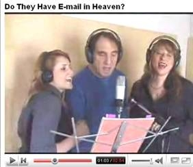
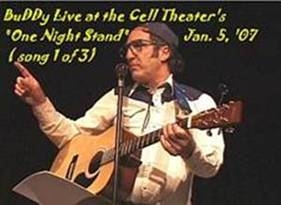
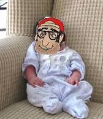

Saturday, March 24, (2007)
Jim
dishes on BuDDy, discusses upcoming joint performance, on KUNM's
"Ear to the Ground" 3-17-07.
Listen
(15 min., 4 mb Real)
|
BuDDy RESPONDS on KUNM's "Freeform" show
with Carol Boss, 3-21-07.
Listen
(15 min., 4 mb Real Player)
|
Jim
Terr and BuDDy,
7pm
(They've never appeared together before,
til now!)
An
unprecedented musical (and metaphysical) event!
Both artists in one place, at one time! How
can it be???
Jim
Terr (left) in his new YouTube hit video
(view at http://www.youtube.com/watch?v=KAjy6BWVew8
)

C/W
superstar BuDDy knockin' em dead
at an Albq. night club.
(see live video: http://www.youtube.com/watch?v=oWtdjlfe0Dk
)

NEVER SEEN TOGETHER BEFORE! Their attorneys are fighting
out who will take top billing and who will be just the opening act,
but in any case this will be an incredible evening of music in the best
possible setting, both BuDDy & Jim, together,
at Studio Home Concerts!
$10
admission, or for $15 admission also get a signed, numbered, limited-edition
sampler CD of songs by both artists!
(Also,
the night before, Friday, March 23, BuDDy (only) will appear at the
Cell Theater's "One Night Stand," (see website: http://liveatthecell.com/id1.html
).
Join
the star of the very popular BuDDy's
Old Fashioned Podcast, heard on all five inhabited continents! Share
BuDDy's excitement at meeting his specially-selected, long-awaited,
mail-order INTERNET DATE, and observe his no-doubt inappropriate response.
BuDDy will also have some startling announcements regarding an exploratory
committee, regarding his involvement in the Anna Nicole Smith case (see
below), and other very newsworthy matters. The press is strongly
advised to be in attendance.
BuDDy joins Anna Nicole paternity race!

Startling
evidence offered
JIM TERR PERFORMANCE REVIEWS:
I laughed. I cried. I got in touch with my inner child and bought him
an ice cream cone. Then I laughed some more. -Eliot Kohen
Jim's
casual, unscripted stage presence provides an intimacy with his audience
that few performers attain. His self-deprecating humor, rather than
projecting any self-consciousness, simply brings the audience closer.
A thoroughly enjoyable evening of entertainment. -Louise Drlik
The
gentle humor and rich warmth of the evening linger long after the last
chord has faded. -Beth Lehman
Funny,
warm, enthusiastic, joyous and inexpensive. See this show!
-Howard Singer
Terr
created a room full of love. -Santa Fe Reporter
Wit,
charm, irony--and good music, too! -Elizabeth West
Jim
Terr writes songs like some people carry their lunch. I laughed. I cried.
I drank unusual amounts of iced tea.
-Steve Terrell
Your
music and story fit in perfectly in our service. There's a lot of heart
in your music. -Andrea Chambers, Unitarian congregation of Santa Fe
Jim's music creates a relaxed intimacy that makes you think, chuckle,
flinch, and even regard ourselves with a bit more gentleness.
-The Celebration (Sunday ecumenical gathering), Santa
Fe, NM
Jim
Terr's creativity and versatility are unmatched. Well, almost unmatched.
- Hodding Carter
[Jim
Terr has been] described as a modern day Mark Twain, Will Rogers,
Jimmie Rodgers and Jackie Mason rolled into one. Can I add
to that list names like Shel Silverstein, Tom T. Hall, Bobby Bare,
Ray Stevens and the likes--master wordsmiths all, and country boys
too.
-Brian Ahern, Country Music & More (UK)
BuDDy
PERFORMANCE REVIEWS:
"A musical tribute from BuDDy is like a passionate kiss from a large
St. Bernard: Unforgettable!" -Hodding Carter
The
Tricklock Reptilian Lounge audience LOVES BuDDy; they eat him up. BuDDy
is profoundly amazing ... with a guitar, a pot belly, and a sincere
desire to just want to be your friend. BuDDy is instantly likeable -
spouting satirical songs and attitudes with such fresh innocence, unaware
that he is hitting the heart ... Who knew that a pot-bellied, sincere,
simple red-neck could be so damn loveable!
--
Kerry Morrigan, producer and co-host, Tricklock Theater's Reptilian
Lounge, Albuquerque, NM
I
am totally a fan of BuDDy's...I think if more Amurricans could just
see things from his point of view (although he DOES heroically admit
that his past has its flaws) well, we'd just be a lot better off, that's
all. It's so refreshing to come across someone with no hidden agenda,
who just wants to be my friend. Have you got any bumper stickers out
for BuDDy?
--The Legendary Panama Red
If
you've never heard such BuDDy hits as "What Do You Need with a Woman
Like That (When You Could Have a Man Like Me)?", "I Meant Every Word
of Whatever I Said," "Come Here Darlin (This Won't Hurt a Bit)", "Haulin'
Heavy Balls", and others -- this is the best chance you'll ever
have to hear BuDDy, live and up-close. You and your grandchildren will
never forgive yourselves if you miss this opportunity.

.jpg)